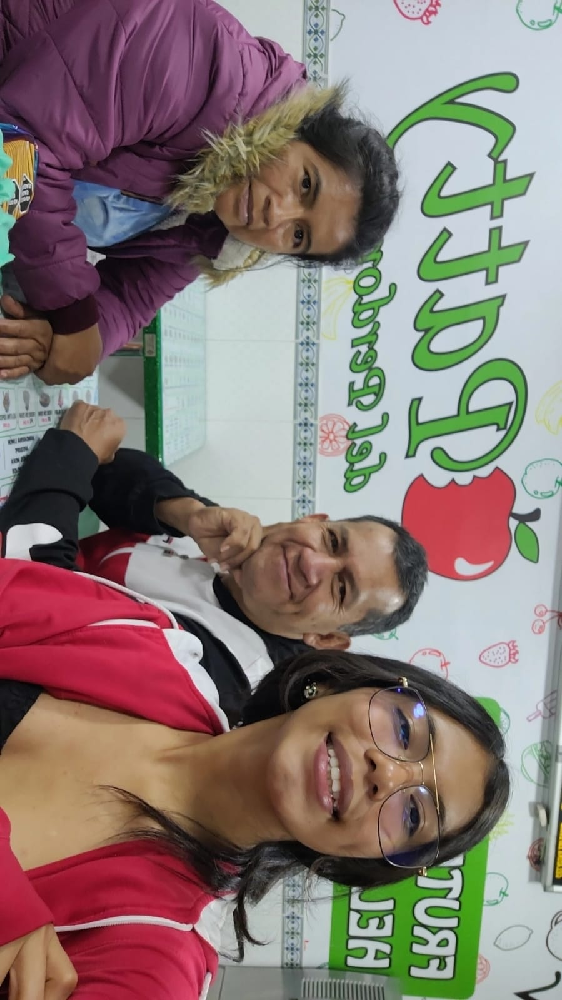
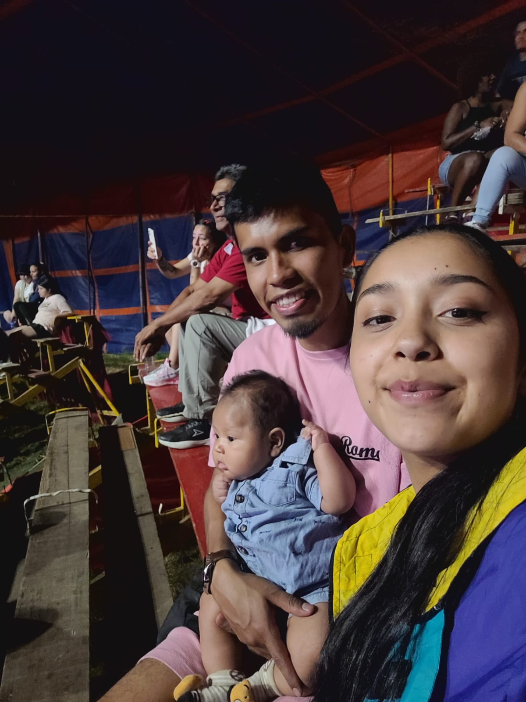
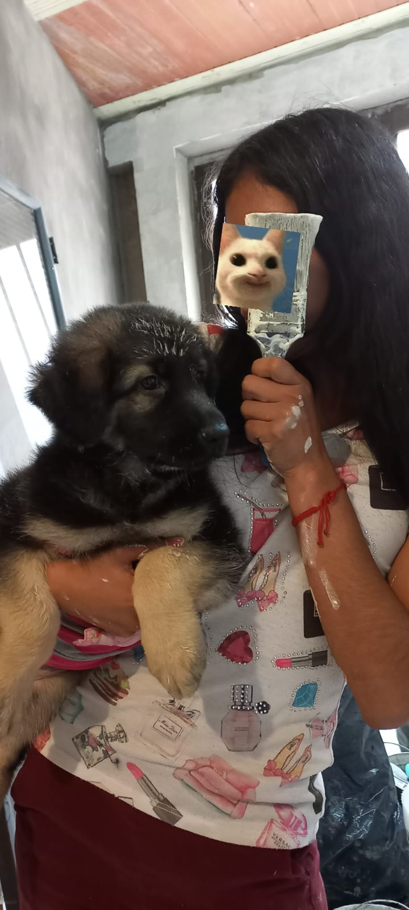
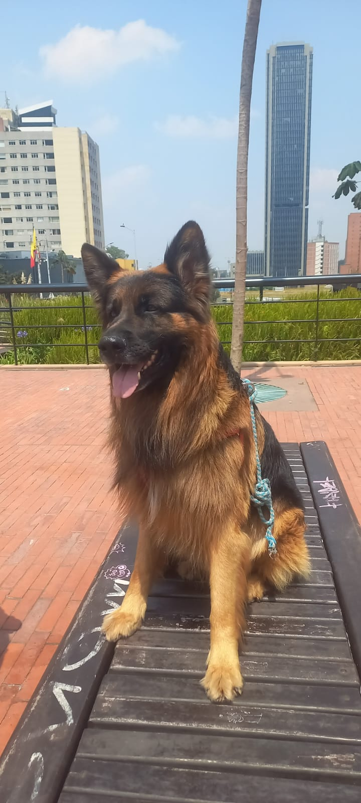
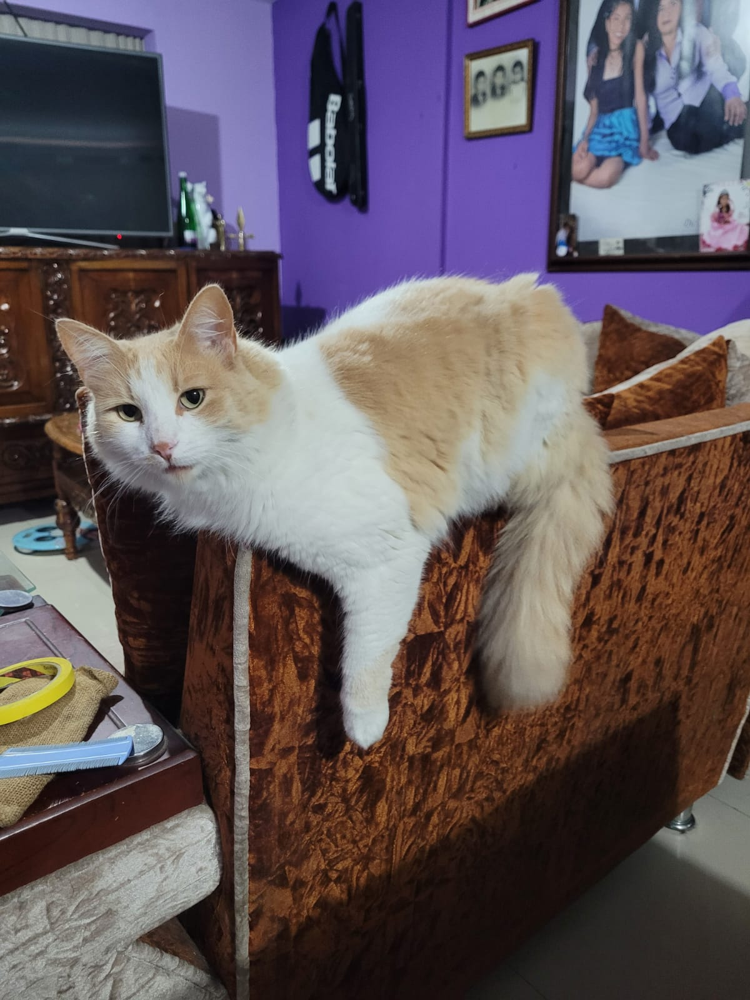
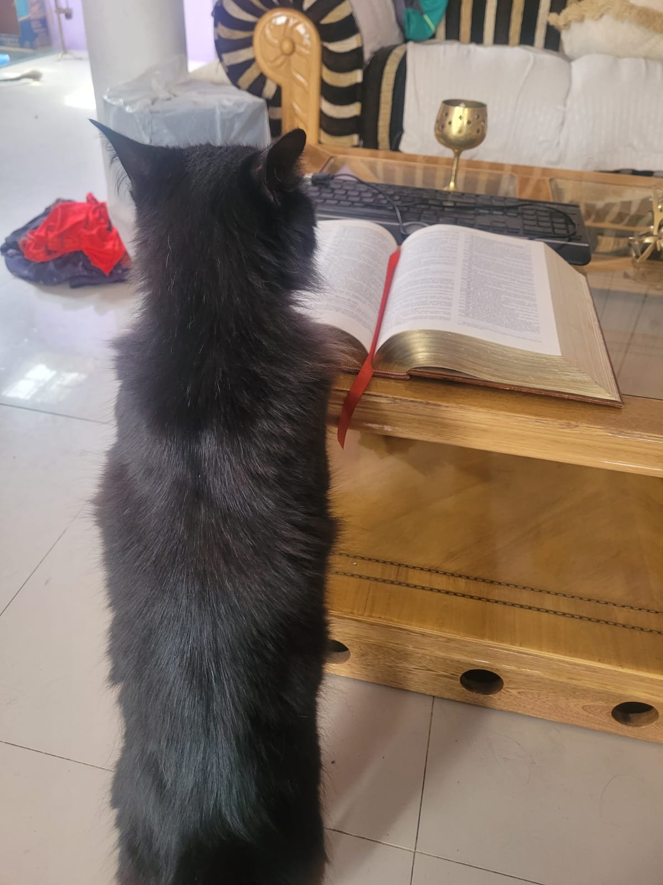

En mi familia somos seis: aqui vemos a mi padre, mi madre y yo
Aqui vemos a mi hermano y su esposa
Cuando me cambié de residencia, mis padres continuaron viviendo en Bogotá. Ahora vivo con mi hermano y su familia
Tenemos cuatro mascotas:.
Cristiana Ronalda
Mickey
Roxy
Roxy es juguetona y muy traviesa, casi siempre tiene hambre, cuando te demoras mas de 2 minutos en darle comida se comienza a hacer la dramatica comiendo bolsas
Minie
A minie le gusta leer libros es muy traviesa y siempre tiene hambre. a ella la adoptamos ya que era callejera, aun sigue saliendo de noche a bucar pelea con otros gatos